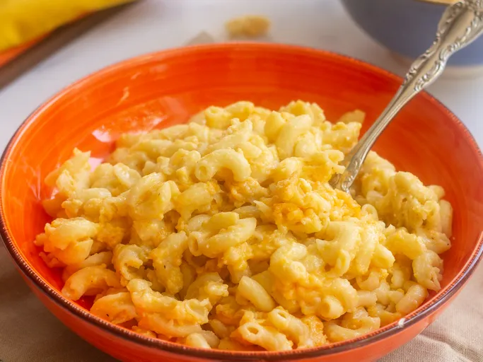

Liens de retour pages home Home
Macaroni au fromage à la mijoteuse

Description :
Ce macaroni au fromage à la mijoteuse est crémeux et réconfortant, et se prépare en quelques instants à la mijoteuse.
Idéal pour les grandes réunions de famille et à emporter lors de repas partagés. Un succès assuré !
Cette recette de macaroni au fromage à la mijoteuse est le repas parfait à préparer et à oublier.
Ingredients :
- Macaroni : Cette recette classique de macaroni au fromage commence par un paquet de macaronis coudés.
- Beurre : Un bâton de beurre apporte richesse et saveur.
- Assaisonnements : Assaisonnez simplement les macaronis au fromage avec du sel et du poivre.
- Fromage : Vous aurez besoin de cheddar râpé pour cette recette de base.
Etape :
- Faites bouillir les pâtes dans de l’eau salée, puis égouttez-les et transférez-les dans la mijoteuse.
- Incorporer le beurre, les assaisonnements et environ la moitié du cheddar.
- Fouettez le lait évaporé et les œufs ensemble, puis incorporez-les aux pâtes.
- Fouettez le lait et la soupe ensemble, puis incorporez-les aux pâtes.